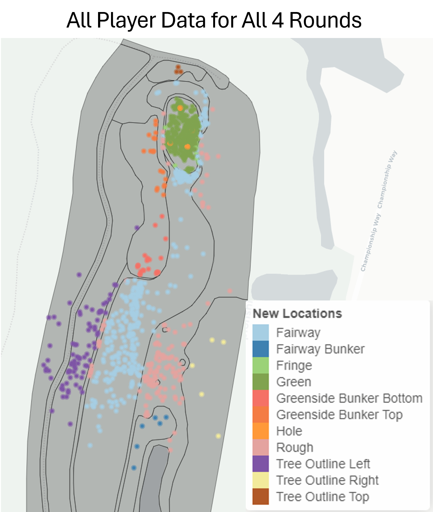
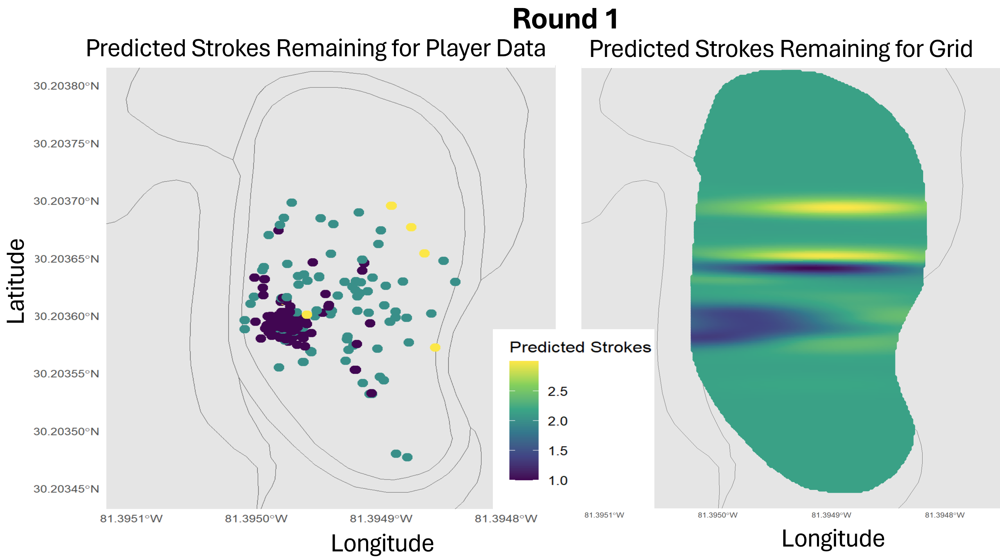

Spatial Determination of Number of Shots to Hole Out on a Professional Golf Hole
Abstract
Golf is a globally popular sport centered on precision and consistency. Players aim to complete a course in as few strokes as possible, navigating anywhere from 100 to over 600 yards from the tee box to the hole while avoiding strategically placed obstacles. This project investigates the spatial and strategic elements of professional golf, with an initial focus on both the number of strokes remaining to hole out, and the variability associated with this estimate. Using data from the first hole of the 2023 Players Championship at TPC Sawgrass—comprising 1,764 strokes taken by 139 unique golfers, including coordinate locations and lie characteristics—we have mapped and transformed this data into a structured format, incorporating shapefiles of the golf course and applying spatial transformations. Through exploratory analysis, we aim to understand spatial variation in stroke progression. Current efforts focus on refining and interpreting this analysis, laying the groundwork for future modeling of stroke progression. The ultimate goal is to estimate, with uncertainty, the predicted number of strokes remaining for any location on the hole, enabling more informed strategies for playing the course.
Introduction
Hole 1 Overview
To begin this project we used data from the 2023 PGA Tour Players Championship at TPC Sawgrass. We focused on the first hole, a par 4 with a length of 385 yards. The data included shot locations, strokes taken, and player information for 139 unique golfers.
 Hole 1 Overview: Image from pgatour.com
Hole 1 Overview: Image from pgatour.com
Cleaning data and Map
In our exploratory data analysis, we found some problems with the initial data. The X, Y, Z coordiantes were in an unknown coordinate system, so we had to transform them into latitude and longitude using ArcGIS and a linear model. Additionally, we had to make our own map of the hole using shapefiles from TPC Sawgrass and ArcGIS.
 How we made our Hole 1 map in ArcGIS
How we made our Hole 1 map in ArcGIS
After transforming the coordinates and making the map, we joined the shot data with the map data to classify each shot based on its location on the hole (e.g., fairway, rough, bunker). We created a new variable called NewBoundary to represent these classifications and to easily define spatial variation than can occur on different sides of the whole despite similar terrain.

Research Methodology
After cleaning and transforming the data, we focused on modeling the number of strokes remaining to hole out (StrokesRemaining) based on the shot location (NewBoundary) and round number (Round). We used a linear mixed-effects model to account for both fixed effects (NewBoundary and Round) and random effects (PlayerLastName) to capture individual player variability.
Exloring Spatial Variation through Linear Model
Linear Mixed-Effects Model Notation
Let:
- \(y_{ij}\) = StrokesRemaining for player \(i\) on observation \(j\)
- \(\beta_k\) = fixed-effect coefficients for each NewBoundary category (because of
-1, the model includes no intercept and estimates one coefficient per category) - \(\gamma_r\) = fixed-effect coefficients for each Round (factor) level
- \(b_i \sim N(0, \sigma_b^2)\) = random intercept for player \(i\)
- \(\epsilon_{ij} \sim N(0, \sigma^2)\) = residual error
The model can be written as:
\[ y_{ij} = \sum_{k=1}^{K} \beta_k \cdot \text{NewBoundary}*{ijk} ;+ \sum*{r=2}^{R} \gamma_r \cdot \mathbb{1}(\text{Round}*{ij} = r) ;+ b_i ;+ \epsilon*{ij}. \]
By applying our model, we got the results below.
Linear Mixed Model Output (Formatted Like lmer Summary)
Linear mixed model fit by REML ['lmerMod']
Formula: StrokesRemaining ~ -1 + NewBoundary + as.factor(Round) + (1 | PlayerLastName)
Data: filtered_data
REML criterion at convergence: 1668.2
Scaled residuals:
Min 1Q Median 3Q Max
-2.6382 -0.7887 -0.4565 0.8761 3.1484
Random effects:
Groups Name Variance Std.Dev.
PlayerLastName (Intercept) 0.0008314 0.02883
Residual 0.3509525 0.59241
Number of obs: 918, groups: PlayerLastName, 73
Fixed effects:
Estimate Std. Error t value
NewBoundaryFairway 2.65860 0.04928 53.944
NewBoundaryFairway Bunker 3.22246 0.24284 13.270
NewBoundaryFringe 2.01567 0.26547 7.593
NewBoundaryGreen 1.43844 0.04346 33.096
NewBoundaryGreenside Bunker Bottom 3.71937 0.18492 20.113
NewBoundaryGreenside Bunker Top 3.17733 0.17165 18.511
NewBoundaryRough 3.13767 0.07157 43.839
NewBoundaryTree Outline Left 3.47234 0.08905 38.992
NewBoundaryTree Outline Right 3.40411 0.34537 9.856
NewBoundaryTree Outline Top 3.62730 0.34712 10.450
as.factor(Round)2 -0.16437 0.05575 -2.948
as.factor(Round)3 -0.08638 0.05566 -1.552
as.factor(Round)4 0.03694 0.05537 0.667
Correlation matrix not shown by default, as p = 13 > 12.
Use print(x, correlation=TRUE) or vcov(x) if you need it.With these results we learned that, for example, being in the fairway is associated with an estimated 2.66 strokes remaining to hole out, while being in the rough is associated with an estimated 3.14 strokes remaining, holding other factors constant. This indicates that players in the fairway are expected to require fewer strokes to complete the hole compared to those in the rough. Additionally, the random effect for PlayerLastName suggests that there is some variability in strokes remaining that can be attributed to individual player differences. As for the round effects, Round 2 shows a significant decrease in strokes remaining compared to Round 1, while Rounds 3 and 4 do not show significant differences.
GPGP Spatial Model
To further explore spatial variation, we are working on implementing a model that models Strokes remaining using a mean-only (intercept) Gaussian process regression with an anisotropic 2D Matérn covariance function, implemented via the Vecchia approximation with 20 nearest neighbors using the R package gpgp.
GPGP Model Notation
\[ y_i = \beta_0 + w(\mathbf{s}_i) + \varepsilon_i, \quad i = 1,\dots,n \]
where
- \(y_i\) =
StrokesRemaining(observed strokes-to-go from location \(i\) on the green)
- \(\beta_0\) = a global intercept (the only fixed effect — that’s why
Xis a column of 1s)
- \(w(\mathbf{s}_i)\) = a zero-mean anisotropic 2D Matérn Gaussian process with
- covariance function:
matern_anisotropic2D
- smoothness \(\nu = 1.5\) (the default for Matérn in gpgp unless
nuis changed)
- geometric anisotropy (different range parameters in the two rotated directions)
- covariance function:
- \(\varepsilon_i \sim N(0, \tau^2)\) = independent nugget / measurement error
- The GP is approximated with 20 nearest-neighbor basis functions (
m_seq = 20), which is why you never need more than ~20 neighbors on a single golf green.
In standard spatial statistics notation
\[ y(\mathbf{s}) \sim \mathcal{GP}\Bigl( \beta_0,\; \sigma^2 \cdot C_{\text{aniso-Matérn}}(\cdot;\theta,\psi) + \tau^2 I \Bigr) \]
with Vecchia approximation using \(m=20\) neighbors and geometric anisotropy.
This approach allows us to capture spatial correlations and provide uncertainty estimates for our predictions. We will implement this approach to all boundary types for all rounds, in the hopes to create a smooth heatmap of predicted strokes remaining across the entire hole for every round. We used our player data to fit the model, then predicted across a grid of locations covering the hole to visualize spatial variation.
Predicted Strokes Remaining based on the GPGP Model for our data vs smoothed across the entire grid
Future Work
Our next steps involve refining the Gaussian Process model to better capture spatial dependencies and improve prediction accuracy. We plan to include other boundaries and rounds. Ultimately, we hope to develop a comprehensive tool that can assist golfers in strategizing their play based on spatial predictions of strokes remaining.
 Strokes Remaining for all Rounds using just our player data
Strokes Remaining for all Rounds using just our player data